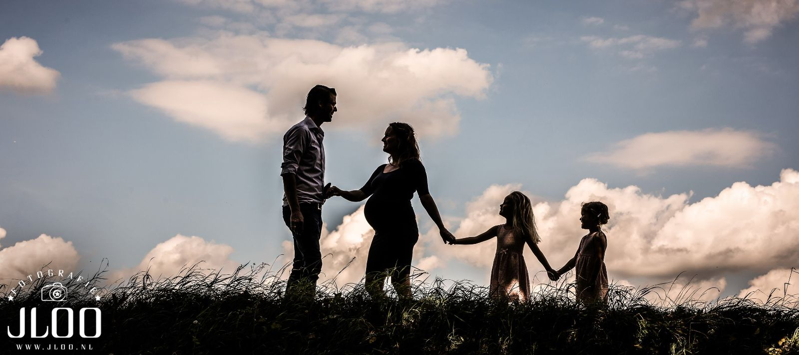
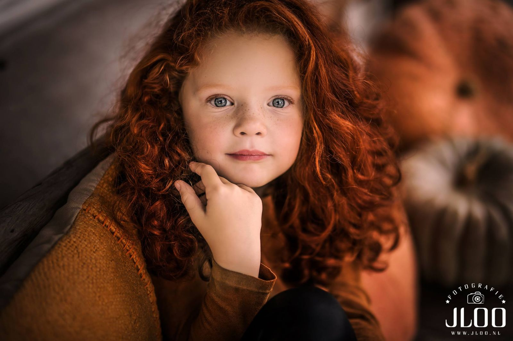
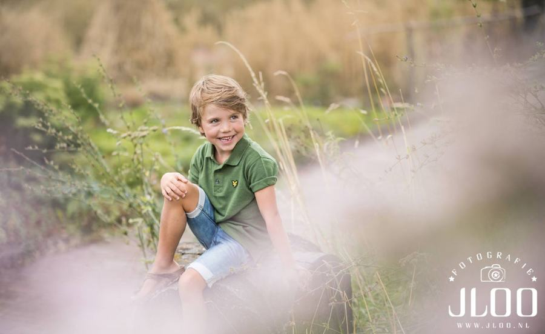
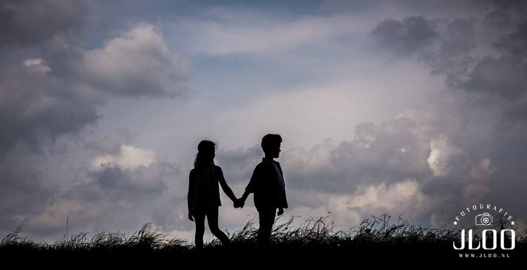

Gezin
Samen. Precies zoals jullie zijn.
Gezins- en kinderfotografie
Fotografie Jeffrey van der Loo · styling Lionne Toet
Kinderen worden zo snel groot. Een gezinsshoot legt vast wie jullie nu zijn: de ondeugende blik, de knuffel, het rennen door het bos.
We fotograferen op een mooie locatie in de regio, in het gouden uur als het kan. Lionne helpt met styling, zodat jullie er als geheel rustig en tijdloos uitzien.


Spelen mag. Stilzitten hoeft niet.
Een shoot duurt ongeveer anderhalf uur. We beginnen met spelen, zodat kinderen aan ons wennen. Daarna volgen de mooie portretten vanzelf.
Kledingadvies: kies zachte natuurtinten en rustige kleding zonder felle prints. Omkleden tijdens de shoot kan.






“Woowieee… echt super mooi de foto’s! Wij zijn er helemaal blij mee. Wij gaan er zeker eentje uitvergroot in de woonkamer hangen!”Roy, Alja & Isa · Breda · Newborn
Praktisch
Een shoot voor het hele gezin.
We spreken een locatie af die bij jullie past: bos, heide, strand of een plek met betekenis. Liever in de studio? Kies dan voor een portretshoot.
Opa en oma erbij? Voor grotere groepen maken we graag een voorstel op maat.
Pakket
op locatie€250
- 1 tot en met 5 personen
- 5 bewerkte foto’s naar keuze
- 150 tot 1.000 onbewerkte foto’s
- Portretshoot in de studio: €100
Extra bewerkte foto €20 · extra persoon (portret) €25 · alle foto’s op USB €30


Kennismaken
Vertel ons over jullie moment.
Een trouwdatum, een uitgerekende datum of gewoon een idee: stuur ons een berichtje. We reageren binnen 24 uur en nodigen jullie graag uit voor een kop koffie in de studio.
gemeente Heusden